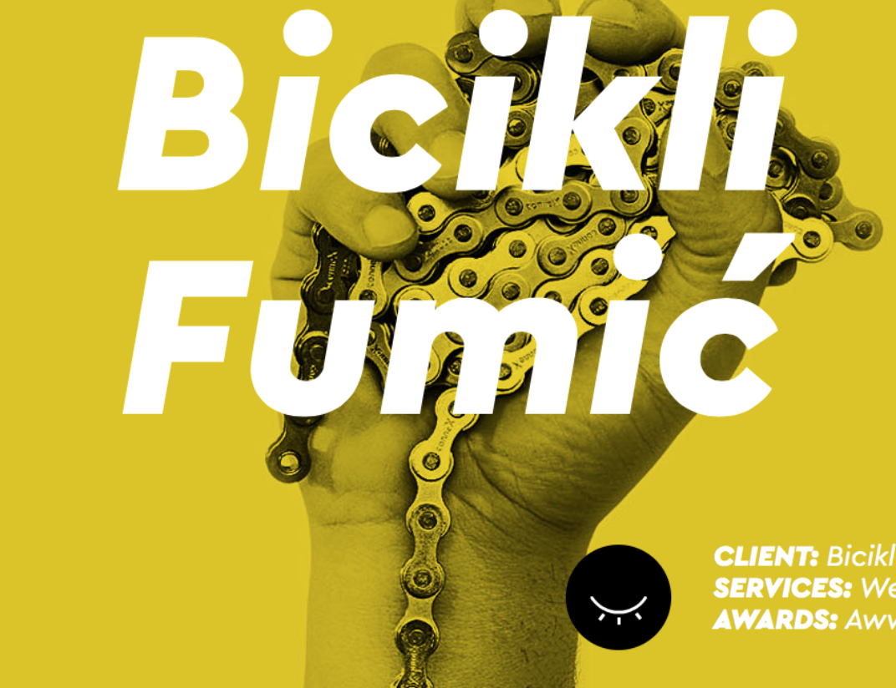

Week 5 - Mar 1st, 2017

A webdesign studio with a programmer's brain and a creative heart. An unusual bunch of creatives who share one vision - making websites that stand out of the many. We enjoy stepping out of our comfort zone and delivering something new and unseen.
north2
Lionel Durimel, a French designer
Lionel Durimel